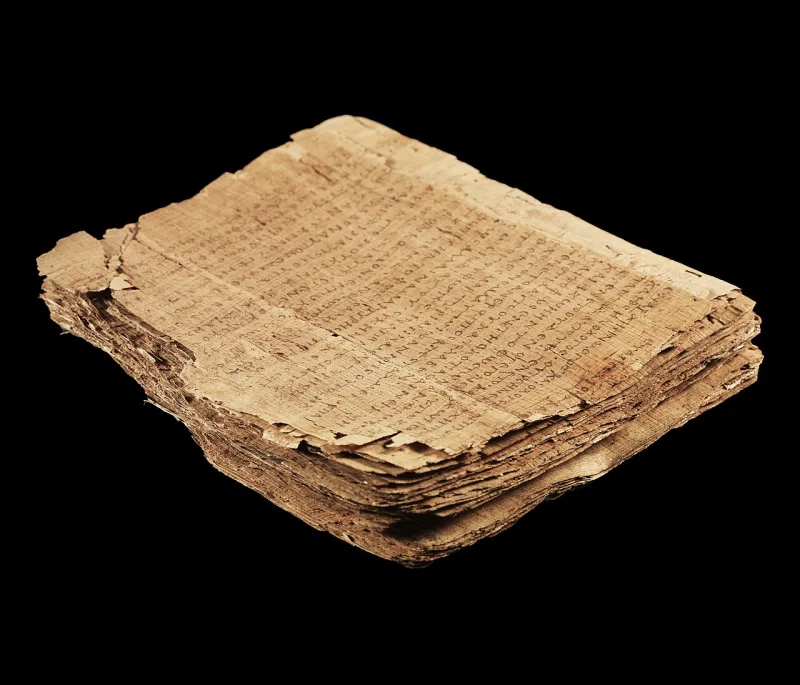
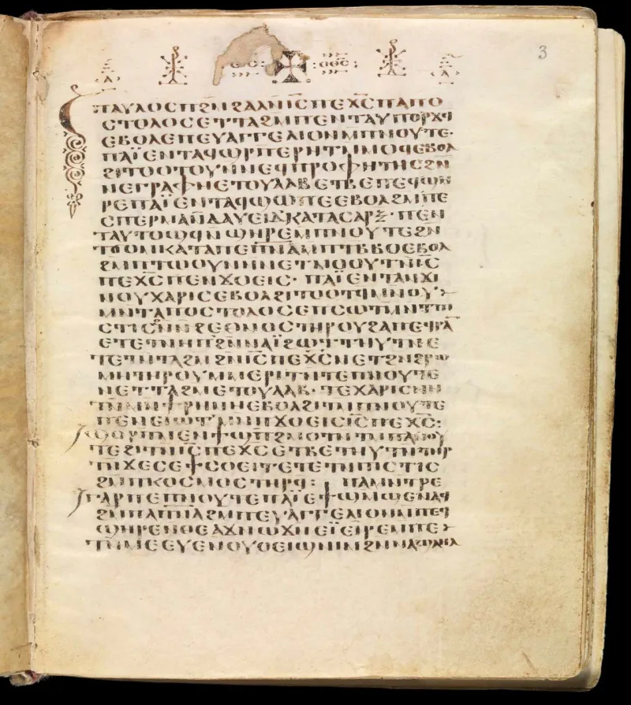
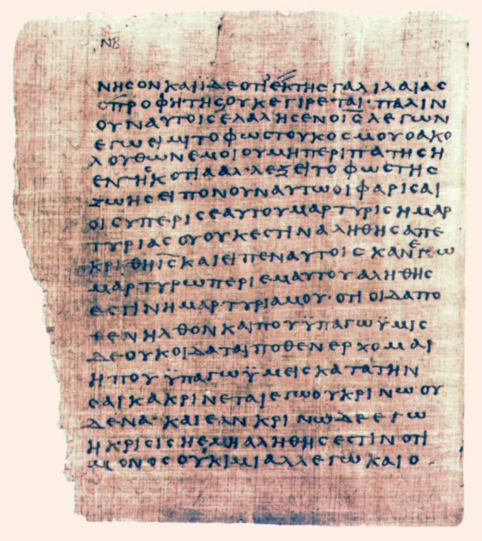

Witness defenders have a real answer here. Say so before your friend does.
Jehovah's Witnesses use their own Bible. It is called the New World Translation.
At John 1:1 it reads "and the Word was a god." Almost every other Bible reads "the Word was God." The Word here means Jesus.
Change "God" to "a god" and Jesus becomes a lesser being. Bruce Metzger of Princeton called it "a frightful mistranslation" (Theology Today, April 1953).
It also gives their Bible a second god. Isaiah 43:10 in that same Bible says none was formed before Jehovah or after him.
Jason BeDuhn is a scholar, and he is not a Witness. His book Truth in Translation defends "a god" as a fair rendering.
The Greek here has no word for "the" before theos, the word for God. He argues that "the Word was God" says more than the Greek does.
The old rule used to refute them, Colwell's Rule, is not really a rule. Even Daniel Wallace grants that conservative scholars misused it.
Philip Harner studied the phrase in 1973 in the Journal of Biblical Literature. He showed it is mostly about nature, not identity.
What God was, the Word was. That is the reading the New English Bible chose.
And it still sinks Watchtower teaching. The Word shares God's own nature in full.
Genuinely arguable, both ways. Most Greek scholars reject "a god." But one credentialed outsider defends it, and the old knock-down rule was faulty.
Do not stake the conversation on grammar. Stake it on Isaiah 43:10.
"Your own Bible says at Isaiah 43:10 that no god was formed before Jehovah or after him. So is Jesus a true god, or a false one?"



A scholar who is not a Witness defends 'a god,' and the old rule was faulty.
Jason BeDuhn is a scholar, and he is not a Witness. His book Truth in Translation defends the reading. In the Greek here, the word theos has no 'the' in front of it. BeDuhn says such a word can mean 'a god' or 'divine.' He argues that 'the Word was God' says more than the Greek does.
Colwell's Rule was long used against the NWT. BeDuhn says it is not a real rule of Greek at all. Even Daniel Wallace grants that conservative scholars misapplied it. Philip Harner studied the phrase in 1973 in the Journal of Biblical Literature. He found it is mostly about nature, not identity. The Word has God's nature.
The Watchtower says its wording keeps that sense. It also keeps the Word apart from the Father. John draws that line in the same verse: 'the Word was with God.'
A fair fight both ways: skip the grammar and press Isaiah 43:10.
Grade this one honestly. The great majority of Greek scholars reject 'a god.' But Colwell's Rule, the classic reply, is itself broken. And one credentialed non-Witness scholar defends the NWT here.
Harner's qualitative reading is where scholarship actually landed. What God was, the Word was. That is how the New English Bible puts it. And that reading still refutes Watchtower teaching. The Word fully shares God's nature. It does not hang on one small article.
So do not fight the grammar at the door. Grant the ambiguity. Then press Isaiah 43:10 in their own Bible. Is Jesus a true god, or a false god? Their theology has no third option.